SQL Queries
Setup and Introduction
In order to get started, make sure you have your environment set up. To do this, I recommend referencing these links:
- You can download MySQL here.
- One free interface I find very useful in writing SQL commands is PopSQL. Which you can download here.
Before we dive into writing SQL queries, it's important to understand what SQL and MySQL are. SQL (Structured Query Language) represents the syntax used in manipulating relational databases, whereas MySQL is a RDBMS (Relational Database Management System). In other words, MySQL uses Structured Query Language to manipulate databases.
Shown below are two tables within a database. The table on the left shows the players trying out for sports teams
while the table on the right shows the coaches for each sport.

The database shown above is a relational database because the two tables 'Players', and 'Coaches' are related by a common field 'Sport'. Often times databases will have tables that are related to each other and through SQL queries, we can retrieve information from these tables.
Creating Tables
Let's start off by creating the two tables we'll be querying in this lesson. The two tables will be
called 'Players' and 'Coaches'. We can make use of the CREATE TABLE and INSERT commands
to do this.
CREATE TABLE Players(
Name VARCHAR(20) PRIMARY KEY,
Age INT,
Experience INT,
Sport VARCHAR(20)
);
CREATE TABLE Coaches(
Name VARCHAR(20) PRIMARY KEY,
Age INT,
Sport VARCHAR(20)
);
INSERT INTO Players VALUES('Derek',18,2,'Soccer');
INSERT INTO Players VALUES('Bob',19,1,'Basketball');
INSERT INTO Players VALUES('Michael',18,4,'Basketball');
INSERT INTO Players VALUES('Tom',16,3,'Golf');
INSERT INTO Players VALUES('Fred',14,1,'Soccer');
INSERT INTO Players VALUES('Carl',18,0,'Golf');
INSERT INTO Players VALUES('Ivan',21,0,'Basketball');
INSERT INTO Players VALUES('Brian',13,1,'Basketball');
INSERT INTO Coaches VALUES("Leo",34,'Soccer');
INSERT INTO Coaches VALUES("Brian",36, 'Basketball');
INSERT INTO Coaches VALUES("Gary",49,'Golf');
We first created two tabels 'Players' and 'Coaches'. Inside each CREATE TABLE block
are the names and datatypes of each column of each table. The PRIMARY KEY signifies the
ID of each entry, similar to an index. Relational databases may also have a FOREIGN KEY
that signifies a column or attribute that is the PRIMARY KEY of another table. After creating
the tables we then INSERT INTO each table specific VALUES, this is how you populate
a table using SQL.
There are many other commands we can use to manipulate our tables before querying them. I've outlined some of them below.
DESCRIBE Players; # Summarizes the Players
DROP TABLE Players; # Deletes the Players table
ALTER TABLE Players ADD Height INT; # Adds a "Height" attribute to Players
ALTER TABLE Players DROP COLUMN Height; # Deletes the "Height" attribute from Players
UPDATE Coaches SET Age = 40; # Updates the ages of coaches to 40
DELETE FROM Players WHERE Name = 'Tom'; # Deletes Tom from Players
Writing SQL Queries
SELECT
"Querying" a database is another way of saying you want to "retrieve information
from" a database. SQL queries make use of a powerful command called SELECT, it allows
us to retrieve specific information from our database. Let's first start off by selecting all the data from
our 'Players' table. We can do this using SELECT * FROM Players;. After running this, we should
see the 'Players' table. The SELECT command is where we put the attributes we're hoping to retrieve,
the FROM command is used to signify which table we plan on selecting our attributes from, the * means "all", and a WHERE command
is used to provide a condition to determine which specific entries from those columns we hope to retrieve. Here's an example of one of these
queries.
SELECT Name, Sport FROM Players WHERE Age >= 18;

In the above query, we selected the 'Name' and 'Sport' of each person in the 'Players' table whose age
is at least 18. We could also add a ORDER BY Sport after the WHERE command
in order to see our derived table sorted by 'Sport'.
If we were instead only interested in the sports that have players over 18, we could take out the Name attribute
from our SELECT command. However, when running this query, you'll notice the same sports come up multiple times.
We can get around this by using the DISTINCT keyword.
SELECT DISTINCT Sport FROM Players WHERE Age >= 18 ORDER BY Sport;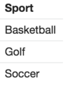
Let's do one more example. What if we wanted to see all the players who play either Soccer or Golf who are
between 14 and 17? We can do this using the following query.
SELECT Name
FROM Players
WHERE (age BETWEEN 14 AND 17) AND (Sport IN ('Soccer', 'Golf'));
Functions
Although it's useful to be able to retrieve entries from our database, sometimes we may be interested in
characteristics of our data. SQL keywords such as AVG, COUNT, SUM, MAX, and MIN can be used to
return characteristics of a column. Here we find some summary statistics of the
basketball team's age distribution. We use the AS keyword to rename the columns in our derived table.
SELECT AVG(Age) AS Average, MAX(Age) AS Maximum, MIN(Age) AS Minimum, COUNT(AGE) AS 'Count', SUM(AGE) AS 'Sum'
FROM Players
WHERE Sport = 'Basketball';
What if we wanted to filter our data based on the letters within non-numerical data? For instance, if we wanted
to find the average age of the players whose names end with the letter 'l' we can use SQL Wildcards which
make use of the LIKE keyword.
SELECT AVG(Age) AS Average FROM Players WHERE Name LIKE "%l";
The LIKE keyword compares a VARCHAR (a word/string) to a specified pattern. The %
in "%l" signifies a sequence of characters that ends with l. The % is what's called
a Wildcard Character. These are often helpful when looking for specific patters within non-numerical
data. A name starting with M would use the wildcard "M%", while a name whose second letter is r would
use "_r%". You can read more about wildcards here.
GROUP BY
Sometimes we're interested in querying data by categories or groups. To do this, we can make use
of the GROUP BY command. Let's say we were interested in the number of players for each sport.
We would have to count the number of players grouped by Sport. In this example, we ordered
the derived table in reverse-alphabetical order.
SELECT Sport, COUNT(Name) AS Total
FROM Players
GROUP BY Sport
ORDER BY Sport DESC;
One confusing part of the GROUP BY command is knowing when to use WHERE versus
HAVING for conditional queries. WHERE is used before the GROUP BY
command whereas HAVING is used after the GROUP BY clause. Here are a couple of examples to help out.
SELECT Sport, COUNT(Name) AS Total
FROM Players
WHERE Age >= 18
GROUP BY Sport
ORDER BY Sport DESC;
SELECT Sport, AVG(Age) AS 'Average Age'
FROM Players
GROUP BY Sport
HAVING COUNT(Name) > 2
ORDER BY Sport DESC;
In our first query, we're filtering entries based on the number of players who are at least 18.
This means we're filtering out players before they're grouped. Whether or not a player
is 18 years old is irrelevant to what sport he/she plays and thus we can make use of the
WHERE keyword. However, in our second query, we're filtering our results based on
how many players there are in each sport, or in other words, after they're grouped, which is why we use
the HAVING clause.
UNIONS & JOINS
Unions and joins are incredibly useful in querying data from tables that
can be combined. A UNION is an easy way to combine multiple SELECT statements.
Here's an example.
SELECT Name, Age
FROM Players
WHERE Age > 18
UNION
SELECT Name, Age
FROM Coaches
WHERE Age > 40;

In this example, we selected both the players who are over 18 and the coaches who are over 40.
Unions are convenient when you want to create new rows in your table. The query result is a derived table
that simply stacks the table with players over 18 on top of the table of coaches over 40. If instead of this
we were interested in combining columns of data. We could make use of the JOIN command.
SELECT Players.Name as 'Player Name', Coaches.Name as 'Coach Name'
FROM Players
LEFT JOIN Coaches
ON Players.Sport = Coaches.Sport;
In the query above, we're retrieving the names of each player along with their coaches.
Their coaches are determined by their sport which is why we joined ON Players.Sport = Coaches.Sport.
However, I included a LEFT JOIN in my query when combining both tables, what is this? A LEFT JOIN
is a method of joining two tables. It starts with each entry in the left table (Players) and then matches it to a value on the right
table (Coaches) based on their shared attribute (Sport), a LEFT JOIN is the same as as
LEFT OUTER JOIN. There are other joins like right joins, inner joins, full-outer joins, and others. The best way to understand the various joins is by visualizing the joins using venn diagrams. Here's a helpful
and easy diagram I found on Reddit that shows the different types of joins.
To know when to use each type of join, it's important you understand how they work conceptually. The Venn Diagram will help
but the best practice is to try each join out yourself.
Nested Queries
Sometimes we may need to write more complex queries and make use of nested queries. A nested query, sometimes called a subquery, is a
SELECT statement within another SELECT clause. You can
think of it as a query that's based on another query. We'll start off with a simple example. Let's say we wanted
a list of players with the same name as a coach. We could this simply by:
SELECT DISTINCT Name
FROM Players
WHERE Name IN (SELECT DISTINCT Name FROM Coaches);
After running this query, we get Brian as an output, the only common name between the two tables. In this example
the subquery is "SELECT DISTINCT Name FROM Coaches" within the "SELECT DISTINCT Name FROM Players WHERE..." query.
Now let's do a slightly more complicated nested query. How could we query the 'Names' and 'Sports' of the coaches who coach teams
whose players' average age is at least 17, or, who coach a team that has more than two players. Although this sounds complex, it's often easiest
to break down the problem into smaller parts. The first part being how to query the 'Name' and 'Sport' of 'Coaches' within the 'Coach' table.
The next part is figuring out how to query the sports whose players meet the conditions. The last part requires the use of the
GROUP BY clause, as illustrated below.
SELECT Name, Sport
FROM Coaches
WHERE Sport IN
(SELECT Sport
FROM Players
GROUP BY Sport
HAVING COUNT(Name) > 2 OR AVG(Age)>=17);
Subqueries are extremely useful when using SQL and can get complicated very quickly. A good strategy is to take the query you're trying to write, and break it down into its queries and subqueries individually if possible. From there, you can combine your queries and subqueries to reach your final query. Remember, practice is key.
Useful Resources
Even though we've learned the most important and "fundamental" SQL commands, we haven't worked with large datasets, complex nested queries, or certain topics such as table aliases and triggers. It's helpful to make your own tables and try to create queries yourself in order to practice. Nevertheless, here are some references I think are particularly useful.
- Here are a couple of places you can practice SQL commands. I personally recommend Hackerrankl, though have found all three helpful. Hackerrank, W3Schools, SQL Zoo.
- Here's a downloadable cheatsheet that goes over the main SQL commands. Cheatsheet.
Data Pre-Processing
Setup and Introduction
In order to get started, make sure you have your environment set up. In order to do this, I recommend referencing these links:
- You can download Python here.
- Most Python code written here will be written on a Jupyter Notebook. You can reference this guide on Jupyter's site for installation. Google Colab works as well.
- Some important libraries we'll be using for data preprocessing include pandas, numpy, matplotlib, and seaborn. All of which can be installed following these guidelines.
- You can download the CSV file we'll be referencing here.
Structuring Data
The first thing we have to do is load our data into our Jupyter Notebook. To open up your Jupyter Notebook,
simply open up your command prompt/terminal and type jupyter notebook. A full guide on the interface can be found
here.
Let's first import pandas into our notebook. We'll reference it as "pd" for simplicity.
import pandas as pd
Pandas is a powerful tool used for manipulating data by providing functionalities to make working with out data easier. The CSV file referenced in this part of the tutorial can be downloaded
here. The first powerful tool in pandas we'll make use of is a DataFrame.
You can think of a DataFrame like a spreadsheet or a data table. It's a data structure representing a two-dimensional table. Let's read in our data from our CSV file and parse it into a DataFrame object to look at the first few rows of our data.
stock_data = pd.read_csv('Sample_Stocks.csv')
stock_data.head()
The head() function displays the first few rows of our table. You can specify the last few rows using tail(). Specifying an integer parameter (head(n) or tail(n)) displays the first or last n rows. We can get summary statistics of our data as well through the describe() function.
stock_data['HINDEX'].describe() # Describes the HINDEX attribute
stock_data.groupby(by='Stock').describe() # Describes all attributes grouped by 'Stock'
stock_data.groupby(by='Stock')['Volume'].describe() # Output shown below

After looking through the columns, you may realize "HINDEX" is relatively useless as it's always zero. We can delete
this column using:
stock_data.drop(columns = ['HINDEX'])
Using SQL, we were able to query a database in order to retrieve specific information. Thankfully, pandas provides a similar functionality. Let's
say we were interested in finding all the entries of stock A with a price of over $46.00. We can do this by using conditionals within
the pandas loc (locate) function. Let's try this out.
stock_data.loc[(stock_data['Stock']=='A') & (stock_data['Price']>46)]
When we run this, we get an error message saying TypeError: '>' not supported between instances of 'str' and 'int'
What this message is telling us is we're trying to compare a string type variable to an integer. We'll have to
convert the 'Price' column into floating point numbers before running our query. We can make use of the replace() function to remove the dollar signs and astype() function to convert the column.
stock_data['Price'] = stock_data['Price'].replace('[\$,]', '', regex=True).astype(float)
stock_data.loc[(stock_data['Stock']=='A') & (stock_data['Price']>46)]

So far, we've looked into the very basics of pandas. We'll continue to make use of this library in future lessons which is why I highly recommend getting more comfortable with the pandas library and its various functionalities. This will make understanding future lessons much easier. Feel free to utilize the references provided in the Useful Resources section.
Missing Data
Part of our data cleaning process is dealing with missing values. One way to detect if your dataset has missing values
is to use the .info() function. Using the dataset from the previous lesson, stock_data.info() outputs the following:

dropna()
We can see our dataset only has 35 non-null price values and 37 non-null volume values out of 40 total values.
One way to deal with missing values is to delete the rows that have at least one value missing. Using pandas,
this can be done by calling the dropna() function on our DataFrame, returning a DataFrame with all rows containing
missing values deleted.
fillna()
However, deleted entries may not always be the best option, especially when
the entry has other important information we might want to keep. This leads us to our first method of handling
missing data using the fillna() function. The fillna() function
allows us to quickly find all NaN values and replace them using a specified method. You can learn more about
fillna() here.
One way to use fillna() is with the parameter method = 'ffill' . This parameter
propogates all non-null values forward, replacing each null value with the previous non-null value.
Conversely, method = 'bfill' does the opposite.
stock_data.fillna(method = 'ffill', inplace = True) stock_data

Previously, the values for 'Price' and 'Volume' for the entry at index 12
were both NaN. After using the ffill method of fillna() the values for 'Price'
and 'Volume' were replaced with the 'Price' and 'Volume' values for the entry at index 11. A snippet showing this change is
shown above. The inplace parameter in the above function call signifies that the outputted DataFrame
should replace our current DataFrame and make changes "in place."
interpolate()
Another way to fill missing values, which is especially useful for time-series data, is the interpolate method. Interpolating data
is very helpful and there are many ways to do it. One of the simplest ways to do this that does not involve fitting
a complex model to our data, is using the interpolate() function. It defaults to a linear method
which replaces all missing values with the linear average of the non-null values surrounding it. It can be called on
an entire DataFrame object like shown below, however, it can be useful for an individual series as well (i.e our 'Price' column alone). Read more about that
here.
stock_data.interpolate(method='linear', inplace=True)

Useful Resources
So far, we've looked into the basics of manipulating our data with the pandas library. The following links and guidelines are extremely useful and I highly recommend looking into them to get a better idea of what we've learned:
- The full pandas documentation that outlines the various functions and required parameters within the pandas library can be found here.
- Another important library to look into is the numpy library (we'll start using this soon), which makes working with arrays much faster and easier. See documentation here.
- Here's a useful "cheatsheet" I used to use that goes over commonly used pandas functionalities. Cheatsheet.
Feature Exploration
Setup and Introduction
If you don't have your environment set up yet. Please reference this guide. Throughout this lesson
we'll make use of multiple Python libraries. If you see a library you haven't previously used, simply install the library
using pip install. For reference, here's the pip install documentation.
Download the CSV file we'll be working with here.
Before we get started, let's recap what we've gone through so far. We've learned how to query a database, import data,
manipulate data tables, and other techniques involved in cleaning and aggregating data. Now that we have our DataFrames
setup, we can begin exploring our variables. This initial "exploration" will help us choose and create a model later on as well
as give us insight into our data.
Univariate Exploration
The first step to looking into our now "cleaned" data is
to perform a univariate analysis. A univariate analysis is when we look at the characteristics
and plots of each variable individually in order to gain insight into our variables as a whole. We'll
be making use of a few new libraries like Matplotlib and Seaborn, which you should install now if you plan
on following along. (See setup for more information). The best way
to start looking into your data is to visualize your data. For this exercise we'll use the
following CSV file. The dataset we're using is
the Iris dataset (read more here).
Even though this dataset is preloaded in the sklearn library, it's best we practice importing
our own datasets. Here is the code requried
to read in our data and get it ready for exploration. Feel free to copy and paste.
import pandas as pd
import numpy as np
import matplotlib.pyplot as plt
import seaborn as sns
iris = pd.read_csv("iris.csv")
iris.columns=['Sepal Length', 'Sepal Width', 'Petal Length', 'Petal Width', 'Class']
If you remember from the Data Preperation lessons, we learned that the describe() function
of dataframes outputs summary statistics of our data. We can do that now and also develop a couple
visualizations.
# Defining subplots
fig,axes=plt.subplots(2,2, figsize=(12, 9))
# Visualizing each numeric attribute
sns.distplot(iris['Sepal Length'], ax=axes[0,0])
sns.distplot(iris['Sepal Width'], ax=axes[0,1])
sns.distplot(iris['Petal Length'], ax=axes[1,0])
sns.distplot(iris['Petal Width'], ax=axes[1,1])
# Displaying figures
plt.show()
These histograms give us insight into our data by showing us each distribution. For instance,
we can see that sepal length and sepal width display unimodality (one mode/peak), whereas petal length
and petal width seem more bimodal. We can go one step furthur and look into the kurtosis and skew of each attribute.
The kurtosis measures how close our values are to our mean, you can think of it as how "steep" our distribution slopes around
its mean. Skew on the otherhand shows us if we have more observations on the tails of our data, in other words,
it shows us if our distribution favors the left or right side.
print("Kurtosis")
print(iris.kurtosis())
print("Skew")
print(iris.skew()) 
Great! We now have our kurtosis and skew values, but what do they mean? A negative skew value indicates that
our data has more observations to the right of the mean, and thinner tails to the left, that's why say the distribution is left-skewed. If our skew is positive,
our data is considered right-skewed. However, the magnitude of the skewness values also matter. Our skewness
values are between -0.5 and 0.5 which means our data is relatively symmetric. A larger skewness value tends to mean
your data is more heavily skewed. In general a skewness value between -1 and 1 is considered acceptable (however
these values aren't set in stone). In terms of kurtosis, a positive kurtosis shows that our data is steep
near the mean, while a negative kurtosis means our "hump" is relatively flat. Like skewness, the magnitude of the
kurtosis value is important. The higher the magnitude, the more observations are clustered near the mean. In general,
kurtosis values between -2 and 2 are considered acceptable.
One more thing we can do is look at a box-plot of our data. A box-plot will show us our interquartile range (IQR)
which represents the range of values between the 25th and 75th percentile. In addition, a box-plot will show us if we have any outliers,
something we'll learn how to deal with next.
sns.boxplot(data=iris)
As you can see, we have outliers in our sepal width attribute. The outliers are denoted by the points
that fall outside the whiskers of the plot. There are many ways to deal with outliers, one of which is removing all entries where outliers
exist. However, determining what should be done with outliers depends on our model. We can train and test our model with
and without outliers to see performance. In general, it is a good idea to deal with outliers early to prevent
our model from being trained on observations that aren't representative of our dataset as a whole. In order to deal with
outliers, we'll first have to import stats from the scipy library and then remove outlier observations.
from scipy import stats
print(iris.size)
for column in iris.columns:
if column != 'Class':
iris = iris[(np.abs(stats.zscore(iris[column])))<3]
print(iris.size)
What we've done here is removed all the outliers from our data. The way we did this was by looking at something called a z-score, which
represents how many standard deviations an observation is from the mean. Generally, any observation with a z-score over 3 (3 standard deviations
from the mean), is considered an outlier. In this code snippet, we iterated through each column and updated our dataframe
with only observations which had a z-score of less than 3. What's interesting is that the size of our dataframe did not change,
no observations were deleted so our data had no outliers.
Something you may be wondering is that why our box-plot displayed outliers while our z-score checker did not. The reason for the
difference is how outliers are calculated. The z-score looks at the standard deviations an observation is from the mean (read more about z-scores here.)
With box-plots, outliers are usually determined by looking at how many IQRs our data is from our mean. Data outside k x IQR (where k is usually 1.5)
from the quartiles denote outliers in a box-whisker plot.
Bivariate Exploration
In our previous lesson, we learned how to look into the attributes of our dataset and
utilize visualizations to explore our data. Often times, we're interested in how variables relate to each other, leading to
bivariate and multivariate data exploration.
To start off, we'll look at how our variables are correlated with each other through a pairs plot, a pairs plot
is a scatterplot of two specific attributes. We can use seaborn to create these.
sns.pairplot(iris, hue = 'Class');
I know the plot may look daunting, but it's very easy to understand. The points are colored based on the 'Class'
of each observation. We did this by passing in the Class attribute for the hue paramater. On either axis of the overall figure
are each of our attributes. Each individual figure corresponds to a scatter plot of those attributes. For instance, in the figure on the top row
second column, attribute 'Sepal Width' is on the x-axis while attribute 'Sepal Length' is on the y-axis. On the diagonal you'll notice
rather than scatterplots, distributions are shown. These are the distribution of each
attribute for each Class.
The next step is to see what insight we can gain from these figures. It seems like the iris-virginica Class
tends to be the largest in terms of dimensions while the iris-setosa seems to be the smallest. Another thing you can notice is that on the
distributions along the diagonal, the peaks and steepnesses aren't the same across classes. This is due to different kurtosis and skew values. If you
look at our kurtosis and skew calculations from the previous lesson, you'll be able to visualize how these metrics translate to a distribution. Something else
you'll notice is that our plot for petal length and petal width seem to follow a strong linear correlation. With pair plots, we can look into how correlated
variables are with each other.
However, there's an even better way to quantify and visualize the correlation between out attributes using Heatmaps and correlation matricies.
Let's start off by getting the correlation matrix of our attributes.
print(iris.corr())
Like in our pairs plot, the x and y axis show our attributes while the values show the correlation between those attributes. Obviously,
variables will be 100% correlated with themselves, which is why our diagonal is 1. After looking at the values you'll notice we were correct
in saying petal length and petal width are correlated, with a correlation of 0.96. We'll notice other variables are also strongly correlated with each other
like sepal length and petal length.
As useful as the correlation matrix is, it'll be helpful to actually visualize the matrix. We can do this with a Heat Map.
f, ax = plt.subplots(figsize=(12, 9))
sns.heatmap(corr_mat, vmax=1, square=True, annot=True);
Our heat map shows us a visual version of our correlation matrix. Our vmax parameter sets the maximum value scale for our correlation. The square parameter
gives us both sides of our matrix rather than a "staircase" version. The annot parameter displays the numeric value for the correlation within each square.
Feature Engineering
Now that we've learned a few techniques in exploring our data, it's time for us to develop the features for our model. We need to alter the features we'll use in our model as well as potentially transform these features in order to help develop stronger predictive models. What concepts are considered part of feature engineering and what aren't is subjective. Think of feature engineering as the final step in figuring out the best way to change our features to better be able to predict our target. When working with our dataset in this lesson, we'll be using a lot of the concepts from the Data Pre-Processing series. Instead of continuing our use of the Iris dataset, let's look into a dataset that has more features. This will help make understanding certain feature engineering concepts easier (we'll go back to the Iris dataset for the next lesson). For this lesson, we'll use the Capital Bikeshare Service dataset, a dataset about a bikesharing service in the Metro DC area (download data here from Kaggle). Our goal is to create a model to predict bike traffic (the 'cnt' column). Let's first take a look at our data.
import pandas as pd
bikedata = pd.read_csv('bikeshare.csv')
bikedata.head()
You'll notice a couple things right off the bat. First, our column "instant" is just an indexing column and won't be a feature in our regression model. Since we already have dataframe indicies, we can get rid of this column.
Next, you'll notice that our 'dteday', 'season', 'yr', 'mnth', 'weekday', and 'workingday' attributes all give us information about the date. In our model, we should try to use as few features as possible while keeping our model accurate.
Given that the information from these attributes is similar, let's see which ones are the most useful. Since we're not doing a time-series analysis, the "dteday" feature can be removed. Likewise, 'yr' can also be removed.
The 'season' and 'mnth' attribute are related to each other since the season is determined by the month. Bike usage would probably change the most season to season rather than month to month, since seasons have much more distinguishable
weather factors. Thus, we can remove the 'mnth' feature as well. The 'weekday' column is related to the 'workingday' column by distinguishing between weekdays and weekends. Since traffic is more likely affected by weekday vs. weekend rather than
two arbitrary days of the week, we'l keep the 'workingday' feature and remove the 'weekday' feature. One feature we glossed over is the 'holiday' feature. The holiday feature has two values, 0 for not a holiday or 1 for a holiday. Let's quickly look into
how many holidays we have. We can do this by running.
bikedata[bikedata['holiday']==1].count()[0]
You'll notice out of our 731 total entries, only 21 are holidays - thats roughly 2.5% of our dataset. One thing we haven't learned yet is the concept of training and testing sets. That's when we divide our dataset into two sets to fit our model and test its performance.
Having a binary feature with very few "true" instances could throw our model off during training/testing. This is because we're not sure that the holiday feature will show up evenly. Although we can get around this using stratified k-fold cross-validation (we'll also get into that later),
it's better for us to remove the feature altogether as it may introduce unnecessary variance.
Often times, you won't be lucky enough to have a dataset that already has the dates split into weekdays, seasons, etc. This dataset has clearly already been pre-processed. If you're only given dates and want to create new features. Simply create a new column
using conditional statements based on the date.
Now let's look at our non-date data. To see a reference as to what each column signifies, go here. Our 'atemp' and 'temp' features are obviously very correlated and will have
multicollinearity. We can deal with this multicollinearity through dimensionality reduction (we'll get more into that in the next lecture), or pure feature selection. In this case, we'll just choose one of them. 'atemp' represents the temperature
felt rather than the actual temperature. Since people are more likely to base their judgements on their perception of the weather, we'll choose to only look at 'atemp'. We also have two features that split up the total count of bike traffic into
'casual', and 'registered'. Since at this point it's difficult to logically determine whether or not our features would be more correlated to one over the other, we'll choose to keep both. So now after pure logical feature selection our dataframe looks like this:
One more thing we can do is categorize our numerical data. Another term used for this is encoding. In school, 90-100 is an A, 80-89 is a B, 70-79 is a C, etc. This is an example of a numerical mapping,
where certain ranges correspond to certain categorical variables or bins. When looking at our data, one feature I think could benefit from this sort of encoding is windspeed. Most people split days into either windy or not windy when making decisions, so let's do the same.
We can now bin our 'windspeed' feature. It's important to make sure each of our bins has enough representation in our total dataset, this will help reduce variance (we'll get more into that later) within our model's results.
Let's first get a summary of our 'windspeed' feature using the describe() function.

We can bin our 'windspeed' data assigning it to a category mapped to its quartile. Let's create a list of [min, 25th percentile, 50th percentile, 75th percentile, max]. Then we'll encode our 'windspeed'
into a categorical bin. NOTE: 'windspeed' will now become a categorical variable.
bins = [bikedata['windspeed'].describe()[3],bikedata['windspeed'].describe()[4],
bikedata['windspeed'].describe()[5],bikedata['windspeed'].describe()[6],bikedata['windspeed'].describe()[7]]
bikedata['windspeed'] = pd.cut(bikedata['windspeed'], bins)
bikedata['windspeed'].head(10)
As you can see in our 'windspeed' column, our speeds have been put into categories. This can help with categorical analysis in looking at regressions across various 'windspeed' bins. Something else we can do is engineer our own features
through something called feature interaction. This means we can combine columns. For instance, let's say 'weathersit' was not given to us as a feature. We could calculate it by creating a new column called 'weathersit', and
assigning values based on conditional statements around windspeed, humidity, temperature, etc. We could say if the temperature is within some range, the wind is below some value, and the humidity is between a certain range, that the 'weathersit' is "2" or "okay".
Like I mentioned earlier, the dataset we imported has already been preprocessed by the uploader and no features like this need to be created.
One important concept we skimmed over is multicollinearity. Multicollinearity is a fancy way of saying our features are correlated with each other. For instance, the season and temperature features may be correlated since temperatures vary according to season.
Likewise, the weather situation ('weathersit') could be correlated with one or more of our weather features. One method we'll go into in our LASSO lesson is using L1 regularization for feature selection to address this multicollinearity. In the next lesson,
we'll go through a common model used for dimensionality reduction called a Principal Component Analysis (PCA).
Principal Component Analysis with Singular Value Decomposition
In the previous lesson, we engineered our features in our bikeshare dataset and made it more ready for modeling. In this lesson we'll use a
Principal Component Analysis (PCA) for dimensionality reduction. A PCA can help us visualize our dataset when we have many features and can also help us with dimensionality reduction. Before we get into how to implement a PCA.
Let's understand how it works. Before I get started I highly recommend checking out StatQuest's video on PCA.
It's only 20 minutes and is extremely useful. Much of what I'll go over is expanded on in-depth in his video (here).
Shown below is a scatterplot of height and weight of various men (blue) and women (pink).
What we'll do next is find the overall average weight and height and shift our axis so that
(Average Weight, Average Height) is our new origin. Our plot now looks something like this:
Our next step will be to find a line of best fit for our shifted plot. This will be called the first principal component (PC1).
The unit vector of this principal component is known as the eigenvector or singular vector for PC1.
How do we find that line? We'll use this diagram to help:
In this diagram, the blue circle represents the data point while the green line represents PC1. The
red line represents the distance from the point to the origin, we'll call this distance 'c'. It's important to note that
this distance never changes, regardless of where the line is. The purple line represents the distance the point is from the
principal component. One way to find the line of best fit is to try to minimize 'a'. This is usually done by minimizing the sum of the distances
squared. That value is known as the eigenvalue for that principal component and the square root of the eigenvalue is called the singular value for that
principal component.
One thing you'll see is that side lengths a,b, and c form a right triangle. 'c', as we mentioned earlier, is constant. According to the Pythagorean Theorem
a2 + b2 = c 2. This means that minimizing 'a' is the same thing as maximizing 'b'. A PCA maximizes 'b' by maximizing
the sum squared of 'b' across all datapoints.
Once the PC1 is found, PC2 is simply the best-fit line perpendicular to PC1. If we had more features,
we could add even more principal components, all of which would be the best-fit line orthogonal to all the others. We'll stick with two dimensions for the sake of
simplicity. Our PC1 and PC2 look something like this.
Now we'll rotate our plot so that PC1 becomes our horizontal axis. Our plot now looks something like this:
If we had more than two features, to create the 2-D plot, we simply project the points from the other principal components on to PC1
and PC2.
If you take the eigenvalue and divide it by (n-1), you get the variation from that principal component. You can compare the varations between different
components to see which ones account for more variability within the dataset. A graph of these variations is called a scree plot
and can be useful to determine how many features to keep in our final model.
Now that we understand the process of principal component analysis using singular value decomposition (PCA using SVD), let's look into how we can implement it.
First, make sure you have your iris dataset properly loaded into a dataframe using the read_csv function. (To see the full
instructions on setting up go here. The CSV file
can be downloaded here).
We'll start by standardizing our features. This means setting the mean and variance to 0 and 1 respectively. We can do this by subtracting the mean from each point (something we did above), and then dividing by the
standard deviation. Luckily, sklearn makes this easy for us.
x = iris.loc[:, ['Sepal Length', 'Sepal Width', 'Petal Length', 'Petal Width']].values
y = iris.loc[:,['Class']].values
x = StandardScaler().fit_transform(x)
All we're doing here is seperating our features from our target variable ('Class'), and standardizing our features (subtracting means and dividing by standard deviations).
After we do this we can start our PCA.
pca = PCA(2)
projected = pca.fit_transform(x)
pca_x = projected[:, 0]
pca_y = projected[:, 1]
pca_x holds our PC1 values while pca_y holds our PC2 values. Remember, we originally had four features and now
we only have two. Now let's visualize these components.
color_dict = {'Iris-setosa':'red','Iris-virginica':'green','Iris-versicolor':'blue'}
color_list = [color_dict[label] for label in iris['Class']]
plt.scatter(pca_x, pca_y,c=color_list, edgecolor='', alpha=0.5)
plt.xlabel('Principal Component 1')
plt.ylabel('Principal Component 2')
plt.show()
PCA is very useful for visualizing data as well as reducing the number of features we have to explore. One more thing we can do is use the line
pca.explained_variance_ratio_. This returns a list showing the variance ratio (as we discussed earlier), for each principal component.
This can help show the importance of different components and help determine how many features to include.
Useful Resources
In this lesson, we learned how to explore our data and understand how our variables relate to each other. We went through a few functionalities of the seaborn and pandas libraries and I highly recommend learning how to tweak paramaters for various visualizations.
- The following are the documentations for the functionalities we learned about.
Seaborn API | distplot() | kurtosis() | skew() | boxplot() | zscore() | pairplot() | corr() | heatmap(). - Here's a helpful guide provided by the University of Minnesota on covariance and correlation. Link.
Data Modeling
Setup and Introduction
If you don't have your environment set up yet. Please reference this guide. Throughout this lesson
we'll make use of multiple Python libraries. If you see a library you haven't previously used, simply install the library
using pip install. For reference, here's the pip install documentation.
The next concept we'll be going over is modeling our data. Even though modeling data is extremely important, it's important to understand
that a majority of your time will be spent cleaning and exploring your data and thus, should be practiced heavily. In this series, we'll go over
some commonly used models, how they work, how to implement them, and when to use them. Feel free to use your own datasets when following along.
Training and Testing Sets
Before we start learning how to use models, it's important to understand what it means to "train" and "test" in the context of machine learning.
When you "train" your model, you are fitting your model to a part of your dataset. "Testing" your data is when you feed the other part of your dataset
into your newly trained model in order to see how it performs. You can see how it performs by comparing your model's forecasts with the actual values in your dataset.
We'll be going much more in-depth on how to do all this in later lectures. Figuring out your train/test ratio is important to prevent under or overfitting.
Training your model too much on your training set may cause the model to be overfitted while not training your model enough may cause the model to be underfitted. A technique
used to avoid overfitting is using another part of your data called a validation set. The validation set is really part of your training set - we'll get more into this in the next lesson.
You'll hear a lot of recommended train/test ratios like 70/30, 80/20, or 75/25 and train/test/validation ratios of 70/15/15 or 60/20/20. If your dataset is smaller,
a validation set may not be helpful and a 70/30 train/test split could work. With larger datasets, using cross-validation can help with fitting the model. We'll split our iris dataset from the previous lessons below.
from sklearn.model_selection import train_test_split
X = iris.drop(columns=['Class'])
X_train, X_test, y_train, y_test = train_test_split(X, iris['Class'], test_size=0.3)
X_train represents the inputs we'll be training our model on, while X_test
represents the inputs we'll be using for testing our model. Similarly, y_train and y_test
are both the outputs we'll be using for training and testing respectively. The train_test_split function splits our iris dataset, with iris['Class'] being the target variable, into a training and testing set according to the ratio in the test_size paramater.
One of the reasons train_test_split is more useful than just manually splitting a Series is because it defaults to shuffling our data. This means instead of just taking the first 70% of your dataset as your training set, it'll shuffle your dataset first to prevent
potential bias based on how the data was prepared or inputted into your database. The train_test_split function can also stratify our data.
X_train, X_test, y_train, y_test = train_test_split(X, iris['Class'], stratify=iris['Class'], test_size=0.3)
Stratifying our training sets allows the model to be trained on a subset more representative of the dataset as a whole. In our case, our target variable is 'Class'. There are four iris 'Class' categories each with a certain share of the total dataset. When a stratified training set is created, it maintains that share of each 'Class' when making the training set. This is especially useful in smaller datasets.
Cross Validation
Cross-Validation is a method to reduce overall bias in our model's predictions. We'll be focusong on k-fold cross-validation. Let's say we took 70% of our data for training and 30% for testing.
We would only be training our model on one specific training and testing set, this may not be the best option because our model might perform better on specific subsets of our data compared to other subsets. How can we
get around this? One solution is to use multiple training and testing sets and then looking at the overall result across all sets. This makes it much easier to compare different machine learning models
because we'll have a better idea of how each model would perform across multiple testing sets. Luckily, this is one of the main benefits of k-fold cross-validation.
K-fold cross validation works by dividing out dataset into k subsets, and running our learning algorithm k times, with each bin being the testing set for a different iteration. I'll give you an example.
Let's say our dataset had 1000 observations. We could use a k-fold cross-validation method with k=10 that would divide our dataset into k=10 bins, each of size 100. Good so far? Instead of then training our model in one iteration,
we'll use 9 of those bins to train our data and the last bin left over to test our data. Going back to basic combinatorics, there are only 10 ways to choose 9 training subsets and 1 testing subset from a set of
10 bins, this is why it runs 10 times.
When k=10, like in the example above, it is known as 10-fold cross-validation. Usually we use k=10 for cross-validation, however, like when we divided our data into training and testing sets, it all depends on how much data you have. Here's a useful visualization
from Wikipedia that shows how a k-fold validation would split our dataset.
Now let's look into how we can implement a k-fold cross-validation.
#/media/File:K-fold_cross_validation_EN.svg){kind=link}
from sklearn.model_selection import KFold
folds = KFold(n_splits=10)
for train_index, test_index in folds.split(iris):
X_train, X_test, y_train, y_test = X.iloc[train_index], X.iloc[test_index], iris['Class'].iloc[train_index], iris['Class'].iloc[test_index]Now we'll have our training and testing sets ready. Another common type of cross-validation is Leave-One-Out Cross Validation (LOOCV). LOOCV is a type of k-fold cross-validation where k = n, or the total number of data points in our dataset. This is when each of our observations will individually be a testing set when training our model. Obviously, as k increases, the computation time increases as well, since more training and testing will have to occur. This is why LOOCV is only recommended for small datasets. When choosing your k, it's important to keep in mind the size of your dataset as well as the complexity of your model. One other reason a high k may not be advisable is due to the bias-variance tradeoff. Something we'll get into in our next lesson.
Bias-Variance Tradeoff
When choosing your model, it's important to keep the bias-variance tradeoff in mind. Let's look into what bias and variance are.
Bias
Bias is how well our model's predictions compare to the expected values. One way to think of it is like throwing darts at a dartboard where the center is your expected output.
If your model had low bias, the darts would be around the center - meaning we did a pretty good job on average in predicting our output. However, we're also interested in decreasing the variability
in those predictions. In the dart analogy, that's like making the darts we threw closer together. This brings us to variance.
Variance
When training a model, if the model becomes overfitted on our training set, it may perform very well when fitting that specific subset of data, but may not perform well when tested on
a different set of data. You can think of the variation in how our model performs on these sets of data as the variance of our model.
Ideally, we want to reduce the variance in order to have more precise outputs. When throwing darts, if the darts are close together, you have low variance whereas if the darts we threw
are far apart, we have high variance. Here's a visualization of the dart analogy.
When making our model, if we train our model too much on our training set it becomes overfitted. This means it will perform very well on the training set but not perform well when tested. The variation in how it performs
between these two sets is why we say it has high variance. If our model is underfitted that means we haven't fit our model well and we have high bias. Here's a figure to help out.
Now that we know what bias and variance are and how they relate to our model's fit, we can look into the trade-off. When using an overly-simplistic model, we'll have high bias since our model doesn't fit our data well. To lower this bias, we can
try using a more complex model. However, the more complex our model is and the more it fits our training data, the more likely it is to have high variance when tested on a testing set. A popular curve you'll see that depicts this relationship is shown below.

Like the figure shows, the goal is to find the optimal balance between bias and variance. This may be a bit confusing since we haven't learned any models yet, but keep this in mind
as you go through the series.
Loss Functions and Optimizers
You might be wondering why we're learning all these concepts before we've even started using any models.
The reason is because learning how to fit various models is just one part of data analysis. The important part
is understanding how the models work and how to optimize and gain insight from them. So bear with me, we'll get to ML models soon.
Let's first learn what a loss function and optimizer are, and then look into some that are commonly used. Let's start with the loss function.
NOTE: We will not be going through the code required for these loss functions as it would be much easier to understand the code when implementing them into a model (we'll do this in our modeling series).
Regression Loss Functions - MAE (L1), MSE (L2) and Huber
As you remember from our train-test lesson. When we use a supervised machine learning model, we split our data into a training set and a testing set.
We then talked about how a model "trains" on the training set and then tests itself on the testing set. How does the model know if it guessed correctly?
The model determines its error using a loss function. Let's see some examples.
Regression Loss Functions: MAE (L1) and MSE (L2) Loss Functions
For regression, two commonly used loss functions are Mean Squared Error (MSE) or L2 and Mean Absolute Error (MAE) or L1. MSE works by taking the average squared difference
between the predicted values and expected values (we kinda went over this in our PCA with SVD lesson). MAE works similarly except only looks at the average absolute value, or magnitude, of the difference between predicted
and expected values. One major difference between these two loss functions is that MSE tends to punish values that are far very harshly, since the
error is proportional to the difference squared. MAE on the otherhand does not punish outliers more since the error is proportional to the distance. We'll be revisiting these topics
when we get into Ridge and LASSO regression, as they use MSE and MAE for regularization (we'll learn about that later).
Regression Loss Functions: Huber Loss Function
Another loss function is the Huber Loss Function. You can think of a Huber loss function as a sort of combination of L1 (MAE) and L2 (MSE).
When using a Huber loss function, you define a δ. This δ represents a tolerance in terms of error in our predictions. If our error is less than this δ
we use a quadratic loss function. This just means our loss function has a degree of 2 - like MSE. However, like we learned earlier, MSE punishes outliers heavily since
loss is dependent on the error squared. Huber counters this by using a different loss function of degree 1 - or linear, when our error is greater than δ. This is called a piecewise function.
Here's the equation from Wikipedia, where f(x) represents our expected value.
This concept is similar to how Elastic Net regularization builds on L1 and L2 regularization, something we'll get into in our Regression lesson series.
Here are some popular regression loss functions:
Classification Loss Functions: Binary Cross-Entropy (Logarithmic)
When working with classification data, we have to use different loss functions that work with our "classes".
We'll be working with other classification loss functions like Hinge Loss later on. We'll skip it for now because we'll cover it once we learn SVMs.
When we have a binary classification problem, our goal is to create a model that
takes in our features and outputs either 0 or 1, representing our two classes. We'll learn more about these in our classification section, but it's a good idea to understand the basic premise.
When we feed our features into our model, let's say we use a logistic regression model, we can get an output between 0 and 1 for each observation that corresponds to the class. For example, when feeding in our features for a specific
observation, our model may output 0.94. If our expected value was 1, we weren't too far off, but if our expected value was 0, we have some work to do. Binary Cross-Entropy is useful because it treats these two cases differently ("binary" because there are two classes).
When the error is large, like if our expected out was 0 in our previous example, binary cross-entropy would penalize these predictions heavily. To better illustrate this, take a look at the log loss function
graph. when the true value is 1. The x-axis represents our model's predictions, and the y-axis represents the corresponding log error associated with that prediction.
As you can see, the log loss function penalizes predictions that are way off much more than predictions that are slightly off. Intuitively, this should make sense. Let's take a look at the cost function.
An important distinction to make is the difference between a loss function and a cost function. A loss function is the the error we calculate for a single observation, whereas
a cost function is the average of our loss function across our entire dataset. Knowing that the average is just the sum divided by the total number of observations, we can see that the loss function for cross-entropy
is everything inside the summation. Let's make sense of what each variable represents. yi represents the observation's target class, either 0 or 1. The p(yi) represents our model's probability prediction of
that observation. Remember that all our probabilities are between 0 and 1 and the logarithm of a value between 0 and 1 goes from 0 to negative infinity. In practice, it's common to maximize the negative log rather minimize the log loss function.
Minimizing the log of a function is the same as maximizing the negative log of that function.
One thing you'll notice aboutis our coefficients are yi and (1-yi), and as we mentioned earlier, yi can only have values 0 or 1. This means that only one of these terms is used when calculating the cross-entropy loss for an
observation. Why is that so? Imagine we have an observation whose target is 0. Our error would simply be our model's output (yi) minus zero, or, yi. If our target was 1, our error would be 1 minus our model's output (yi), or
, (1-yi). The cross-entropy loss function will prove extremely useful when we start using neural networks and other classification models.
Now that we know what a loss function is, we can look into how to minimize it. We can minimize our loss function by using
certain optimizers.
Optimizers
Like our last lesson, this lesson will focus on the conceptual and mathematical understanding of certain optimizers rather than
their programatic implementation. We'll be implementing these optimizers throughout our machine learning models series.
Optimization functions are commonly used in conjunction with loss functions. If you remember from our loss functions lesson, a loss function represents the error
of a model's prediction. Obviously, when we fit our model to our training set, we're interested in trying to minimize our error. This is where optimizers come in.
Optimizers are functions whose primary purpose is to minimize or maximize another function - in our case, a loss function.
(Vanilla) Gradient Descent (GD)
An optimization algorithm you'll definitely hear about and use is gradient descent. To understand gradient descent, we'll go through
how it works. Let's say we're trying to use gradient descent for the linear model:
Our loss function (RSS) is:
Let's imagine that we substituted two random values for θ0 and θ1 into our linear model
and then calculated our RSS.
We could graph the point (θ0, θ1, RSS) on a 3-D plot. Here's an example of what that plot might look like:
You can imagine the plane the "bowl" sits on as our (θ0, θ1) plane, making out third axis (the one coming up)
our RSS axis. Remember that our goal is to minimize our loss function, graphically, that means we want to find the "bottom" of our bowl. This is called a minima.
The two types of minima are local and absolute. A local minimum is a minimum relative to surrounding points whereas
an absolute minimum is the minimum for the entire plot. You can think of it like your local star basketball player, a local legend, and Kobe Bryant,
an absolute legend (RIP Kobe). In the diagram above, our local minimum is our absolute minimum.
Finding a minimum means
we have to find where our plot bottoms out, or in other words, where the slope and deriviative are zero. We can take our RSS loss function
and take the partial derivative with respect to each of our θ's to see how the deviations
in any specific parameter affect the RSS keeping while all else constant. These expressions are the rates of change of our RSS function with respect to our paramaters,
in this case θ0 and θ1. Remember that a derivative of a summation
is simply the derivative of each term added together, and when taking the partial with respect to θ0 or 1, the other θ can be treated as a constant.
Okay, so now what?
We'll start off by giving arbitrary values for θ0 and θ1. You can imagine our gradient descent algorithm plotting that point
on a graph (θ0, θ1, RSS) and then jumping to another θ0, θ1, calculating the model's RSS with
the new paramaters, and plotting that point before repeating the process. Our gradient descent algorithm tries to take steps or jumps towards the minimum
by iteratively adjusting θ0 and θ1 until the step sizes are as close to 0 as possible, or a certain step limit
has been reached.
It might be hard to visualize so here's a gif from GIPHY that might help out:

Here is how we will mathematically update our weights.
The equation pretty much says that our paramater's updated value should be its previous value minus how much a change in our parameter would affect our RSS, scaled by our learning rate α.
θ' represents our updated value and α represents our learning rate. Our learning rate decides how meticulous our gradient descent algorithm should be in terms of step size.
If our learning rate is too small, it will take a long time for our algorithm to converge, if our rate is too large, we may overshoot and end with infinite error. This is why determining the learning rate is vital.
Trying out different rates and using a fixed value is a good way to start. Another common practice is to start with a larger learning rate and then decrease it as your model approaches its optimal solution.
This is helpful because it allows our model to work quickly in the beginning with larger steps while being more precise around the minima.
Gradient descent is very useful but has some drawbacks. One major drawback is working with Big Data. When we have a lot of features and a lot of observations, our gradient descent algorithm will have to calculate the partial deriviatves
for each parameter in each observation, this can be very time-costly. Luckily, SGD helps with this problem.
Stochastic Gradient Descent (SGD) and Mini Batch Gradient Descent
Stochastic Gradient Descent (SGD), is a variation of the Gradient Descent algorithm. In our gradient descent algorithm, we
used all our observations when finding our errors before changing our weights. With a lot of data, this becomes too time-costly.
SGD randomly chooses a single sample in each iteration to calculate our error and partial derivatives. This makes our computation n times faster, n being our
dataset size.
SGD minimizes our loss much faster but has a lot more noise and can oscillate around the minimum. If we wanted to get the best of both worlds, we could use
Mini Batch Gradient Descent. Our vanilla gradient descent algorithm took our entire dataset as a "batch," while SGD took one sample as a "batch".
Mini Batch Gradient Descent takes a subset of our dataset as a batch in each iteration to adjust our model's weights. This improves the computational complexity of vanilla gradient descent
while decreasing the variance from stochastic gradient descent.
Momentum
The first extension of gradient descent we'll look into is momentum. One issue with gradient descent is its ability to distinguish
local minima from absolute minima. SGD helps with this by introducing a random process during training to "jump" around more.
However, SGD does not do well in cases where one dimension is changing at a much different rate than another. To see how momentum
can help lessen the chance of stopping at a local minimum, let's look at the following diagram.
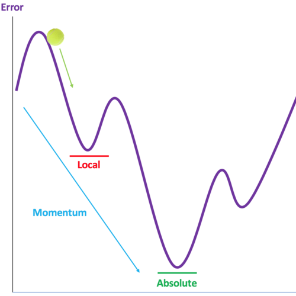
As you can see from this diagram, there's a small hiccup at the local minimum which our SGD algorithm may confuse as the absolute minimum. One thing you'll notice is even though there's a small bump,
the overall trend seems to be downward, or, the overall momentum seems to be downward. If you don't get what I mean by this, imagine a tennis ball at the top of that chart.
If we were to let the ball roll, when it gets to the bottom of the first hump (local minimum), it'll already have momentum to carry it over to the next hump.
This is in essence what our momentum algorithm is doing with steps. Now the question is, how can we incorporate this into our algorithm?
Well, let's first revisit at our update function from gradient descent:
As we discussed earlier, this update function works by taking our previous gradient and looking at how much it changed since our last epoch. If we wanted to see our momentum, we want to also take into account
how our gradient changed the epoch earlier as well, and before that, and so on. Our momentum algorithm takes our gradient descent update function one step furthur
by also including how much the gradient changed the epoch before the last. This introduces an additional term into our update function and will make it look something like this:
Each time the parameter is updated, the previous change in gradient is multipled by a factor β between 0 and 1 to reduce its weight. This allows our algorithm to take recent updates into account more than
changes from older updates.
AdaGrad
Before we jump into the Adam algorithm, we have to look into two other algorithms called AdaGrad and RMSProp.
We'll start with the Adaptive Gradient Algorithm (AdaGrad). To understand AdaGrad, let's revisit our gradient descent update function. This time, instead of writing "RSS" we'll use "L" (Loss).
This can be rewritten as:
You'll notice that our α is constant and doesn't depend on our parameter estimates. AdaGrad improves on gradient descent by decreasing the learning rate as
the model gets closer to the solution. It does this by taking the α from the equation above and dividing it by an expression every epoch to yield:
The only difference between this and our previous equation is the denominator of the square root of Gj plus some epsilon. The epsilon isn't very important as its
main function is to prevent division by 0. One thing you should take note of is that each parameter will have its own adaptive learning rate, which is very useful
in minimizing our overall time-cost. So anyway, what is Gj? You can think of Gj as our scaling factor for our learning rates. The larger our value for Gj,
the smaller our learning rate and vice versa. Gj is calculated as follows:
When we start, our Gj is 0 so our α's denominator is simply ε. There are some important things to notice. The first thing is that since Gj starts at 0 and a squared value (positive) is being
added, our Gj value will increase every epoch as more and more positive terms are added. This means our denominator for our α will continually decrease and after a certain point, our learning rate will be too small for our algorithm
to effectively change our parameters.
RMSProp
RMSProp tries to build on AdaGrad by solving the issue of the learning rate continuously decreasing. To understand RMSProp, we'll compare it to AdaGrad and see how it differs. If you remember our update function for
AutoGrad, it looked something like this:
For our RMSProp, we'll be using the same parameter update function. The only difference will be how we calculate our Gj term. In our AutoGrad algorithm, we used
the following function:
This function says that our updated Gj will be its previous value plus a proportion of how much it changed. Our RMSProp update function for Gj, uses
the exponentially weighted moving average (EWMA) of these two terms. It does this by multiplying each term by factors of β and (1-β) respectively like thus:
The beauty of adding the hyperparameter β is that now the Gj' function is not costantly increasing. This means that our effective learning rate, will
not continuously decrease, offering a solution to AdaGrad's issue. Luckily, there's a way to combine these optimizers into a new optimization algorithm called
Adam.
Adam
Adam, or Adaptive Moment Estimation, is an algorithm that builds on all of these optimizers. Adam is a relatively new algoritm published in 2015 and is
known as an extremely effective optimizer. The Adam optimizer works by combining the advantages of Momentum, AdaGrad, and RMSProp. Just a quick review, let's take a look
at our parameter update functions for our momentum algorithm and our AdaGrad/RMSProp algorithm.
Momentum
AdaGrad/RMSProp
Our AdaGrad update function says the amount a paramater θj should be changed is related to a modified learning rate multiplied by
our previous epoch's change in the loss function with respect to θj. However, what if we wanted to look at more than just the previous change? Well, this is where we can add
momentum into our algorithm. We'll start by making our parameter update proportional to the modified learning rate multiplied by some expression for momentum Mj, like so:
Just a quick reminder, the t represents our epoch. This makes it easier to understand which gradient lags we'll be using in our updates. Now that we have our updated update function, let's see how we can calculate our momentum term Mj.
With momentum, our goal is to look at how our gradient has been changing while placing more weight on recent changes than earlier changes. Our G'j update function in RMSProp used an EWMA
for its gradients. It looked like this:
We can modify this to include momentum by using the update function to update Mj rather than Gj. Our new momentum term update function will look like this:
Note: Our Mj starts at 0 for our first epoch.
Let's look at a helpful gif that shows how these optimizers compare in a specific instance (in this case on what's called a saddle point):

We started with gradient descent, saw how we could add Momentum, then saw how we could alter learning rates with AdaGrad, then built on AdaGrad to include moving
averages for updates using RMSProp, and then built on top of all of those to get to our Adam optimizer.
Data science is a field where methodologies improve on each other through advancements in research. Data science and machine learning are still in its infancy and optimization models
are constantly being developed and researched. Understanding basic concepts and methodologies will help us eventually be able to begin improving these algorithms. One step at a time.
Maximum Likelihood Estimation for Parameterization
We've gone over quite a few algorithms and will be going through quite a few models as well. One thing all statistical models have are paramaters.
Parameters are the inputs we give our model to best fit our data. For instance, in a linear regression model in the form:
Our parameters are our an's. In order to find our parameters, we looked into various loss and optimization functions.
For a linear regression model, ordinary least squares (OLS) can be used to estimate our parameters.
It basically tries to find what values for our parameters will minimize our total squared error. We'll learn soon that OLS is just a special case of MLE where the error is assumed to be normal.
MLE tries to find what values for a probabilitity distribution's parameters maximize the likelihood of us observing our data. This might sound a bit confusing so
let's breakdown what likelihood is. You might think it's the same thing as probability. You're half-right. A likelihood is really just another way of phrasing a probability. When working with
MLE,
we can think of probability as the chance of observing certain data in our model given certain paramaters.
Whereas with likelihoods, we look at the chance
of our model having certain parameters given our data. We can write this like so:
Now let's figure out how we can logically find a distribution's parameters. One way is by trying different values for parameters and try to maximize the
likelihood of that parameter producing our data. That sounds pretty logical right? Well luckily, that's how an MLE works. The equation for likelihood should now
make more sense.
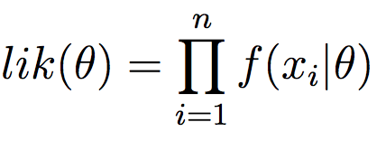
The Π symbol represents the product of a set of numbers. You can think of it like a Σ for multiplication.
Let's make sense of this equation. The equation is saying that the likelihood of observing some parameter θ is
a product of the probabilities of observing each of our observations given that parameter. You might be wondering why we're
taking the product. Well, if you remember, the probability of two independent events, A and B, occuring is
P(A) x P(B). In this case, the probability of a certain observation being produced by a certain parameter is independent of the probability
of a different observation being produced by that same parameter. Since we're assuming independence, we can say that the overall likelihood of observing a parameter
is just the product of the probabilities of observing each sample with that parameter. Obviously, our goal should be to maximize this value, but how do we do that?
Maximizing the likelihood function is difficult to do because taking the derivative of a bunch of products would require extensive
chain rules. One way to go about this is by looking at the log of the likelihood, otherwise known as, wait for it, the
log-likelihood. This will work because a logarithm is an increasing function.
That means maximizing our log is equivalent to maximizing our original function, which was also an increasing function. Our log-likelihood function looks something like this:
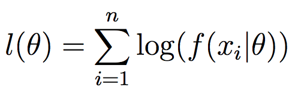
Let's say we have our data and want to fit a normal distribution to it. Our first step would be to figure out what the parameters are.
A normal distribution is a distribution that is symmetric around the mean and whose mean, median and mode are the same. The parameter's we'd need then
would only be μ (our mean) and σ (our standard deviation). This is what the probability density function (PDF) of
a normal distribution looks like given a single observation:
We can rewrite this as a likelihood.
Like we mentioned earlier, taking the derivative of a Π operator is very difficult. Taking the logarithm of our likelihood (called log-likelihood) changes the products
to additions, making computation much easier. This is what our log-likelihood would look like (we'll use a natural log).
We can continue to simplify the expression inside the summation to yield:
Our next step is to maximize this expression. We can do this by setting the partial derivative of of log-likelihood function with respect to each of our parameters to zero.
Simplifying our partials yield the following expressions for our parameters μ and σ.
You should recognize these expressions. This shows us that the value for μ, our distributions mean, is the mean of our data and our
σ, or distribution's standard deviation, should be our sample's standard deviation. We were able to derive these expressions for our mean
and standard deviation through MLE.
Linear Regression
The first model we'll look into is linear regression. Linear regression works by trying to find the line of best fit. Or, the line that minimizes the error between
our predictions and what the values actually are. Here's an animation to help out.
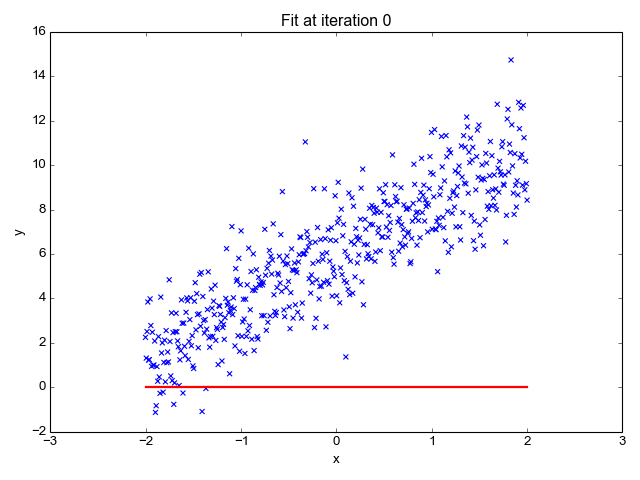
The best way to understand linear regression is to understand what a linear regression algorithm is trying to do. A linear equation takes the form:
Where a0 represents the y-intercept, or when our linear equation crosses the y-axis. This is usually refered to as the constant or shift. The coefficients
a1,2...,n represent the weights given to each of our features (independent variables) x1,2,...,n. The larger the weight, the more important
that feature is in predicting our output. Our overall goal is to minimize the cost function, how we go about optimizing our model, whether through OLS or gradient descent, will be covered
in the next lesson. Our cost function looks something like this:
This equation is what we call the Mean Squared Error (MSE). J represents the cost, what we're trying to minimize. While pi is our prediction and yi is the actual value. What we're doing is looking at the
difference in what our model predicted and what the actual output was, squaring it, and averaging it across our n observations. No wonder it's called Mean Squared Error! Minimzing our cost function (J), is how we determine the coefficients
a0, a1, ..., an, in our final model. Like I said earlier, we'll be going over how to minimize the cost-function in our next lesson.
Now let's look into how we can implement a linear regression model. The dataset we'll be using is based on data collected from the Capital Bikeshare Service, a bikesharing service in the Metro DC area (download here). Our goal will be to build a regression
model that relates the features we choose to the total bikes being used on a given day. We'll start by importing our libraries and loading/preparing our training and testing sets.
import pandas as pd
from sklearn.model_selection import train_test_split
from sklearn.linear_model import LinearRegression
from sklearn.metrics import r2_score
bikedata = pd.read_csv('bikeshare.csv')[['workingday','weathersit', 'temp', 'atemp', 'hum', 'windspeed', 'cnt']]
X_train, X_test, y_train, y_test = train_test_split(bikedata.iloc[:,:-1], bikedata['cnt'], test_size=0.3)
Instead of choosing all attributes, we've decided to only look at a few (this is an arbitrary decision, to know how to deal with features, I recommend looking at the
Feature Engineering lesson). We split out data
into a training and testing set. If you'd like to use cross-validation, you can look into this lesson.
Next, we'll fit our linear regression model, look at how it performs, and develop our linear equation.
lr = LinearRegression()
lr.fit(X_train,y_train)
y_pred = lr.predict(X_test)
print("R-Squared: ", r2_score(y_test, y_pred))
print("Weights: ",lr.coef_)
print("Constant: ",lr.intercept_)
The first line shows our R-Squared value. An R-Squared value is a correlation coefficient that tells us how well our model
performed when predicting during the testing phase. When looking at the error of our model, we can call the regression error
the difference between our prediction and our expected output, and call total error the difference between our prediction and the average output.
When you subtract the sum of your regression error squared divided by the sum of your total error squared from 1, you arrive at your R-Squared value. Our next outputs
are the coefficients and intercepts of our model. Remember a linear model takes the form:
The coefficients outputted correspond to the weights for each of our features. One thing you'll notice is that certain weights are higher than others, for instance, 'weathersit', 'temp', 'atemp', 'windspeed' seem to have the highest weights which means our model
predicts they have model the target variable better, or in other words have more "sway", in the outcome. If we were to run the regression with just these four variables,
our R-Squared wouldn't be too much different - it may even be worth it. This idea is the basis of Ridge, LASSO, and Elastic Net regression, models we'll get into
in the next lesson.
Ridge, LASSO, and Elastic Net
Ridge Regression
When using linear regression, especially with small datasets, the chance of overfitting your model is high. This is because although there is low bias, with a smaller training set,
the variability in how your model performs on testing sets will increase. In order to counter overfitting, we can use various regularization techniques used by Ridge and LASSO regression.
They pretty much work by introducing some bias in the model in order to lower the variability of how the model performs on test sets. This is especially useful when the coefficients
in your linear regression model are far apart. This is where Ridge Regression comes in.
Ridge Regression uses something called L2 Regularization. Regularization is used to reduce overfitting.
L2 Regularization reduces model complexity and helps bring the weights in our model closer to zero, in essence, decreasing variance and shifting us more left on the bias-variance curve.
If you're confused, take a look here. Linear Regression is prone to overfitting and high variance, what we can do to counter that is to introduce bias.
In return for adding bias, our model has decreased variance.
A traditional linear regression model minimizes the sum of squared residuals, whereas in ridge regression, the sum of squared residuals plus a λ times the sum of the coefficients squared is minimized. You can think of this as a penalty term.

If λ=0, our ridge cost function equals our linear regression cost function. Let's implement a ridge regression model. First make sure you add from sklearn.linear_model import Ridge to get our library ready.
rr = Ridge(alpha=100)
rr.fit(X_train,y_train)
y_pred = rr.predict(X_test)
print("R-Squared: ", r2_score(y_test, y_pred))
print("Weights: ",lr.coef_)
print("Constant: ",lr.intercept_)With an alpha of 5 we get:
Let's first look at our alpha=100 model. The larger our alpha parameter is, the more bias we introduce and the higher our "penalty term" gets. You can think of alpha as a parameter that represents how much we want to scale our model's coefficients down.
A larger alpha helps reduce overfitting.
In this case, an alpha of 100 is too large as it underfits our model. In trying to lower variance, we increased bias too much and are now on the opposite end of the bias-variance curve.
Using an alpha of 5, as you can see, yields a much higher correlation. We can see this because as we start with an alpha of 1 (linear regression) and increase it, we'll notice that after a certain point
our model performance starts diminishing.
The main benefit of this added bias is a decrease in variance. Our coefficients are much more evenly distributed which helps give our model
more stable results. This concept is L2 regularization. With an alpha of 5 our weights were somewhat more evenly distributed and this phenomenon is exaggerated
even more with an alpha of 100. Here's a visualiation provided by scikit-learn.org, showing how
as alpha values increase, weights for features tend towards zero.
Here are the coefficients from our model between the linear regression and two ridge regression models we fitted. This is another depiction of how L2 regularization moves weights closer to 0.
LASSO Regression
In this lecture we'll delve into LASSO (Least Absolute Shrinkage and Selection Operator) regression. In ridge regression, we improved on linear regression by adding a penalty term to help make our coefficients more stable.
Ridge regression utilized L2 regularization while LASSO regression uses L1 regularization. LASSO regression adds feature selection in the mix,
which means it can make certain coefficients or weights zero, thereby removing them and selecting the others. To see how this works, let's look at the LASSO cost function.
The difference in the penalty terms in ridge and LASSO regression shows how L1 and L2 regularization differ. Like ridge regression, a λ value of 0 yields
the linear regression cost function. By only looking at the magnitude of coefficients rather than the square, LASSO regression permits certain weights to reach 0 whereas in ridge regression,
weights can only approach 0. This type of regularization is extremely useful when we have a lot of features in our data. L1 regularization uses feature selection to help reduce
model complexity.
Let's quickly implement LASSO regression model. First, from sklearn.linear_model import Lasso.
lasso = Lasso()
lasso.fit(X_train, y_train)
y_pred = lasso.predict(X_test)
print("R-Squared: ", r2_score(y_test, y_pred))
print("Weights: ",lasso.coef_)
print("Constant: ",lasso.intercept_)
As you can see, LASSO regression gave a weight of 0 to our third feature, an example of feature selection.
Using linear models on this dataset have clearly not been very effective. When using a linear model, ensure your data is linearly seperable, you can test this
by simply fitting a linear model and looking into performance. If your model has high error, don't worry! There are more regression models, some of which we'll be going into in future lessons.
Here's a helpful chart that shows
how linear, ridge, and LASSO regression compare. Before we move on to SVR, let's look into Elastic Net regularization, a combination of L1 and L2 regularization
Elastic Net
In this lesson we've looked into linear, ridge, and LASSO regression and have learned how ridge and LASSO add bias into the linear regression model.
They do this by including a penalty term. The sum of the weights squared penalty term for ridge regression is L2 regularization while the sum of the magnitudes
of weights penalty term for LASSO regression is L1 regularization. Elastic Net combines these. If you remember our cost functions from the Ridge and LASSO, you'll
remember each one had a different penalty term boxed. The Elastic Net cost function is the linear regression cost function plus α x Ridge Penalty + (1-α) x LASSO Penalty.
In other words, it's a combination of L1 and L2. You can think of the α value as a ratio between L1 and L2 regularization.
Let's implement Elastic Net regularization. First, from sklearn.linear_model import ElasticNet.
elastic = ElasticNet(alpha=0.1)
elastic.fit(X_train, y_train)
y_pred = elastic.predict(X_test)
print("R-Squared: ", r2_score(y_test, y_pred))
print("Weights: ",elastic.coef_)
print("Constant: ",elastic.intercept_)The closer your α value is to 1, the more L1 regularization will be used and the closer your α value is to 0, the more L2 regularization will be used.
Logistic Regression (Logit)
Here we'll get into one of the most commonly implemented classification models, Logistic Regression, We've already looked into a Linear Regression model
that can predict a continuous variable, but what if we need to classify our data? That's where a Logit model comes in. Let's first quickly review how we did linear regression.
We fit a line to our data and found the optimal coefficients for our linear model that took the form:
Our logistic regression model will be very similar to our linear regression model. In fact, a logistic regression is really just a linear regression on the log-odds of your data. This will be easier to understand
with an example. Let's say we want to figure out whether or not a student-athelete plays basketball or soccer solely based on his/her height. We can take our data in the form (height, sport) and encode our bins
(sports) into numbers. We can say a soccer player is a '0' while a basketball player is a '1'. To read more on how encoding works, check out the Feature Engineering lesson
here. Since we have two classes, this problem is known as a binary classification problem. We can use logistic regression for multi-class classification but for now, let's start with a simple binary classification. Below is a side-by-side view of our data and plot:
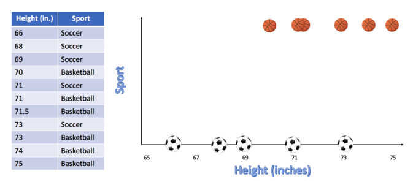
In the above plot, you'll notice that there is an overlap in heights between the basketball players and soccer players, usually when working with data this will happen. Depending on your model and your loss/cost functions, you
will need to take care of this one way or another. When we go into SVM's, you'll see how we can use this information to decide between hard and soft-margins as well as how we can add regularization
to our models to help us generalize. For now, let's think of a shape that could fit this data well. A typical line doesn't work between we have no values between 0 and 1, but we could fit what's called a Sigmoid function. Here's a
visualization of a line (red dotted) and a a sigmoid function (green) fitted onto our data.
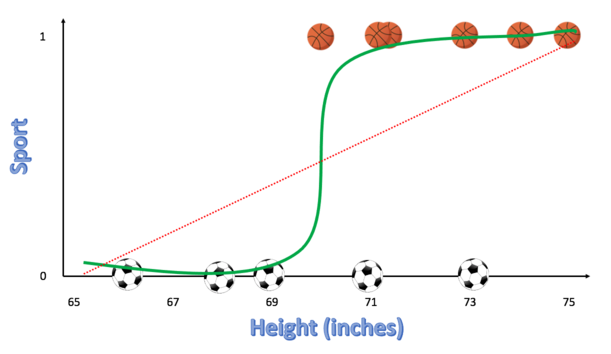
As you can see from above, the 'S' shape (sigmoid) fit our data better than a line. Let's try to understand what the sigmoid graph in the above plot is really telling us. Our sigmoid function has a lower-bound of 0 and an upper-bound of 1 - similar to a probability or likelihood. That's because we can think of the output of our sigmoid function as the probability of the observation belonging to
class '1'. Why wouldn't linear regression work well here? Well, the probability that someone is a soccer player or a basketball player will be between 0 and 1 and the line of best fit will continue to both positive and negative infinity. Luckily, we can still make use of our linear regression model and modify it to create our Logit model. Let's think about how we can do this. A line with a non-zero slope will have a range from negative infinity to positive infinity,
while our data has a range of 0 to 1. What if we transformed our data from having a range of 0 to 1 to having a range of negative infinity to infinity? Instead of modeling the probability of our data, we could model the log odds of our data. This can be done using the formula below:
We just transformed our y-axis from being probability to being log-odds. What are log odds though? Recall that the odds of an event happening is the probability it will happen divided by the probability it won't happen. What are the odds you roll a die and see a number greater than 1?
Well the probability of getting a 2,3,4, or 5 is 5/6 while the probability of getting a 1 is 1/6. The odds are then 5/6 divided by 1/6 which is 5. So we would say we have a 5 to 1 odds on that bet. As for why we take the logarithm of these odds, I recommend watching the StatQuest video on odds vs. log-odds here, though I'll try my best to briefly summarize why here.
The issue with regular odds is that the when the probability of the event happening is less than 0.5, our p/(1-p) is between 0 and 1. If the probability of the event happening is greater than 0.5 however, the odds can take values from 1 to infinity. Since the ranges in both cases aren't symmetrical, this will cause our model to be biased towards probabilities greater than 0.5. We can take the logarithm of these odds and it will become symmetrical. Here's how that works.
The odds (p/(1-p)) can take on values from 0 to infinity when the probability (p)
approaches 0 and 1 respectively. When p is very small and close to 0, log(p/1-p) approaches log(0/1) which approaches negative infinity. When the probably of the event is almost certain and close to 1, log(p/(1-p)) approaches log(1/0) which equals log(1) - log(0) which equals
0 - (negative infinity) or infinity. Let's recap this transformation.
- 1, Started with probabilities - Range: 0 to 1.
- 2. Converted the probabilities into odds - Range: 0 to infinity
- 3. Converted odds into log-odds - Range: -infinity to infinity
Now that our data has been transformed to be in the range of negative infinity to infinity we can perform a linear regression on our transformed data. This is what our transformed data looks like now:
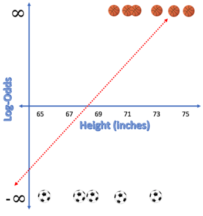
One thing you'll notice right off the bat is that the y-values in our transformed data are either negative infinity or infinity. This is because our probabilities of a player being a soccer player or basketball player were 0 and 1 - we already knew those probabilities because we were given them! The issue is that
we can't use our "typical" least-squares to minmize our error since our errors are technically infinite. What we can do is use a Maximum-Likelihood Estimation (read the lesson on MLEhere) to find our coefficients. Once we find our line of best fit, we'd have successfully created a model to
related our input (heights of players) log odds of an event (the player being a basketball player). The thing is, this isn't what we set out to do. We need to find a way to relate the input to probabilities. Here's where the math comes in. Below you can see how we can use the equation of the line we just fit (expression in green)
and transform it into a sigmoid function simply by converting the log odds (a natural log in this case) to probabilities by solving for p. I purposely highlighted the linear expression we get from fitting our line to the transformed data in green so you can see how it comes into play in our final equation.
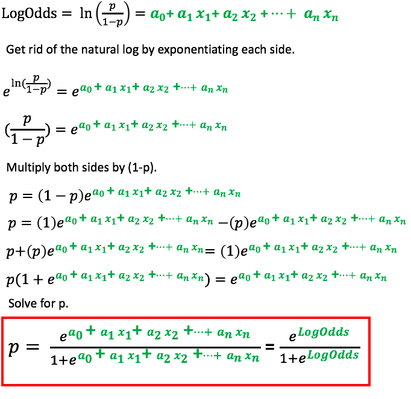
This expression is the form of our Logit model. If we want to classify our data, we will need to conver this probability to either a 0 or 1. One simple say to do this is by setting a threshold value, let's say 0.5 and saying any value above 0.5 will be classified as 1 while any value below 0.5 will be classified as a 0.
It's important to note that the threshold will not always be 0.5. Sometimes we may use a lower or higher threshold function depending on whether we want to reduce our Type-I or Type-II error (we'll get into this in the next couple of lessons including ROC and AUC curves). Let's now look at how to do a logistic regression in Python
using sklearn.
As a reminder, this is very basic code and does not make use of any sort of hyperparameter tuning or reguliarization techniques. In practice, a logistic regression model will have to be optimized and a default model may not always perform best. You can read the previous lessons on optimizers and loss-functions to see the possibilities.
In addition, we will later get into hyperparameter tuning (specifically with neural networks) later on and the overall procedure will be somewhat similar to hyperparameter tuning for other ML models like a Logit model. Nonetheless, the code is provided below for the classification of the Iris dataset we've been working on provided from the UC Irvine ML repository (data).
import pandas as pd from sklearn.linear_model import LogisticRegression from sklearn.model_selection import train_test_split from sklearn.metrics import accuracy_score from sklearn.preprocessing import OneHotEncoder # Reading in the Data iris = pd.read_csv('iris.csv') iris.columns=['Sepal Length', 'Sepal Width', 'Petal Length', 'Petal Width', 'Class'] iris['Class'] = iris['Class'].astype('category') # Train-Test Split (80-20 Split) X = iris.drop(columns=['Class']) Y = iris['Class'].cat.codes X_train, X_test, y_train, y_test = train_test_split(X, Y, test_size=0.2) # Logistic Regression - Be Careful, it defaults to L2-Regularization logit = LogisticRegression(penalty = 'none') logit.fit(X_train, y_train) y_pred = logit.predict(X_test)
Please be aware that the Logistic Regression model from sklearn defaults to a L2 Reguliarzation. To remove this you will have to explicitly state: penalty = 'none' as a parameter. Next, let's look into how we can analyze the results of our classification model.
Confusion Matrix
Now that we've learned our first classification model. Let's look into how we can see how well it did. One way to see this is by using something called a Confusion Matrix. A confusion matrix
can help us see how well our binary-classification model performed by comparing how the model classified both positive and negative examples. Below is an example of what a confusion matrix would look like. (Source)
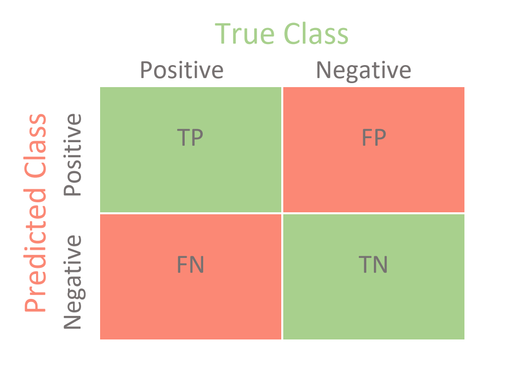
{kind=link}
The top left square represents the number of examples that were positive and were predicted to be positive by the model - this is called the number of True Positives (TP). The top right square represents the number of examples that were negative, but the model falsely classified as positive - the False Positives (FP). Similarly, the bottom left square represents the number of examples the model classified as negative but were actually positive - False Negatives (FN), and the bottom right square represents the number of negative examples that were correctly classified as negative - True Negatives (TN). Next, let's look into the two main types of errors we will face with binary classification - Type I and Type II.
Type I and Type II Errors
The first type of error is known as a Type I error. A type I error occurs when we falsely reject a true null hypothesis, or in other words, when the model classifies an example as positive when it is actually negative (false positives). A Type II error is when we fail to reject a false null hypothesis, or in other words, when the model classifies an example as negative when it was really positive (false negative).
The best way to think about this is if we have a test to diagnose cancer in a patient. Our false positive rate would be our Type I error and our false negative rate would be our Type II error. In this example, which error do you think is more important and should be minimized? Ideally, we want to be able to diagnose a patient who has cancer as often as possible so they can receive a timely treatment. Misclassifying someone who doesn't have cancer as having cancer would allow that individual to receive further tests in order to diagnose whether or not he/she truly does have cancer and decide what the best course of action is. On the other hand, misclassifying someone who has cancer and concluding they do not have cancer will be more costly since that individual will not be able to get the early care he/she needs which may even lead to his/her death. In this case, it is quite obvious that we want to reduce our false negative rate (Type II error). Can you think of an example where we would want to minimize our false positive rate instead?
What if we had to create a model to determine whether or not someone committed a serious crime that carries a lengthy sentence. If we falsely convict an innocent man, we could end up ruining his life. Ideally, we want to ensure that we minimize the number of false convictions, or false positives in our model. This is the equivalent of minimizing the Type I error. Before we get into how we can use an ROC and AUC to do that, let's first learn some terminology.
Accuracy, Precision, Recall, F1 Score
Below are the formulas for accuracy, predicion, recall, and an F1 score.
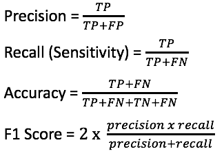
As you can see above the accuracy is the proportion of examples our model predicted correctly, our precision is the proportion of examples our model classified as positive that were in fact positive, our recall shows us our true positive rate and our F1 Score is the harmonic mean of our precision and recall. The F1 score is derived from the F-score with the parameter beta equal to 1. You can read more about the F-score here. Now that we have an idea of how these values are calculated. Let's see how we can use ROC and AUC in order to analyze these metrics.
Area Under Curve and Receiver Operating Characeristics (AUC & ROC)
Now that we understand the idea behind a confusion matrix and the four main metrics, is there a way we can use them to figure out an optimal threshold for our classification problem? What about a way to compare which classification models work best? The answer is yes and yes. First, let's get familiar with two terms: sensitivity and specificity. These two metrics are similar to the metrics we discussed earlier, in fact, sensitivity (True Positive Rate) is just our recall from earlier. Specificity (True Negative Rate) is the proportion of negative examples that the model correctly classified as negative. I've summarized the two equations below:
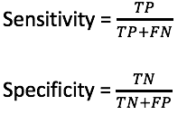
Receiver Operating Characteristics (ROC) Curve
Let's quickly recap how we got our confusion matrix. We created a classification model, predicted probabilities using the classification model, and then converted the probabilities to classes based on if they were above or below a certain threshold. This means for every threshold, there exists a different confusion matrix. We usually think of the threshold as simply 0.5 since logically, if an example has more than a 50% chance of belonging to a class, we should put it in that class. The problem with using 0.5 is that it does not take into account whether or not we are trying to minimize our false positive or false negative rate and it may not work well depending on what data is fed in. Remember in our previous lesson we discussed two scenarios where we would want to minimize our Type I and Type II errors. Choosing a different threshold is one way we can minimize those errors.
The ROC curve plots the sensitivity (true positive rate) on the y-axis, and 1-specificity (false positive rate) on the x-axis. For each threshold we pick, we will get a new confusion matrix and can plot the TPR and FPR on the ROC curve. To summarize we will:
- 1, Create a Classifier
- 2. Computer Confusion Matricies for different thresholds.
- 3. Computer the Sensitivity and Specificity of each Confusion Matrix
- 4. Plot the (FPR, TPR) for each threshold.
Here we can see what an ROC curve would look like:
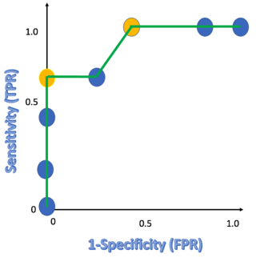
In the above plot, each point represents a different threshold using in the classification model. A line connecting the points (0,0)and (1,1) show the points at which the false positive rate equals the true positive rate. Ideally, we want to maximize the true positive rate while minimizing the false positive rate. In the diagram above, the points highlighted in yellow show the best points according to our aforementioned criterion. These points also map to a different threshold value. Which threshold value we would use in this specific case would depend on whether or not we want to maximize our true positive rate or minimize our false positive rate. This decision varies depending on what the classification problem is.
So now we know that given a classifier, we can map different threshold values to different confusion matricies and thus different points on the ROC curve, Like each threshold value had a seperate confusion matrix, each classifier has a seperate ROC curve. What if there was a way we could look at the ROC curves of different classification models and determine which classifier is better? Lukcily we can do that using the AUC.
Area Under the Curve (AUC)
The idea behind AUC is quite simple. Since ideally we want our false positive rate to be as low as possible and true positive rate to be as high as possible, we want to be as far left from the line that connects (0,0) and (1,1) as possible. THis is because the points closer to that line and to the right of that line, have a higher false positive rate than true positive rate. One thing we can do is plot the ROC curves for each classifier and then take the area under those curves to compare the models to each other. The model with the highest AUC will be better since it better optimizes for both a higher TPR and a lower FPR. This will come in handy later when we learn more classification models.
Autoregressive Moving-Average Model (ARMA)
Now we'll start working with time-series data. When we refer to time-series data, we mean data that's indexed by a
time or date. We've worked with regression models before where we've regressed target variables on seperate features, but what if we wanted to regress
an observation with previous lagged observations? We can make use of an AR, or autoregressive model.
Autoregressive Models (AR)
We'll start off by going over autoregressive models. Autoregressive models are models that relates an observations value on its previous vaules.
Here's a basic example of what I mean.
The model above is an example of an AR(1) model. This means its an autoregressive model that utilizes one autoregressive lag. We'll learn more about this soon.
You should notice that the formula above looks very similar to our equation for linear regression. In the model above, we're saying that the value of y, our target variable, at time t is related to its value
y at time t-1. Lags are how many previous "time steps" or "intervals" our model will use as features in our predictive model.
yt-1 is known as the first autoregressive lag.
Determining how many autoregressive lags our model should use is very important. We'll be going through
how to do this using ACF and PACF plots. Let's first take our equation above
and rewrite it to take into account 'n' autoregressive lags. Since our input into our model is a lag of our ouput, we can
denote the output as X. The general form of an AR model would then look like this:
In summary, an autoregressive model is a model where the output depends on its previous values. An AR(2) model means the
output variable's value is going to be dependent on two autoregressive lags, or in other words, its two previous values.
We'll be implementing these models near the end of the lesson. The reason for this is because once we learn
ARMA, ARIMA, and SARIMA models, the parameters can be adjusted to give us simple AR or MA models. It's important to understand the underlying intuition behind these models first.
Moving Average Models (MA)
The next piece of the puzzle is moving averages. Let's first understand what a moving average is. A moving average simply calculates
the average of our time-series over a certain fixed n lags. So a 30-day simple moving average would be the average of our time-series over the past 30 days.
So what's the advantage of even using a moving average? Why can't we just look at the latest value and make predictions off that? Well with time-series data,
there tends to be a lot of noise, or random fluctuations. It's important that our model does not overreact to these random movements and more importantly,
looks into the overall trend of the series before reacting to a fluctuation. This is a reason why a moving average is known as a lagging indicator. Now let's look into what an MA
model looks like.
Where θ0 is 1, μ represents our mean, and ε represents our error. This might look a little complicated so let's start off by looking at an MA(2) model. A model that uses
two moving average lags. This can be written like so:
Let's make sense of what's going on here. The ε term represents how far off our previous prediction was.
That means our model is saying the predicted value is going to equal our average value plus some coefficient times our last lag's error, plus another coefficient times
the error from the lag before. You might've noticed by now that our MA model uses how far off our previous values were in order to more accurately predict our next value.
So what is ε's value?
ε is white noise. A white noise sequence has a mean of 0, a finite variance, and no correlation amongst the terms.
We usually write this as such:
If you remember our linear regression equation from the Linear Regression module, you might
be thinking that this looks similar. You're right. A moving average value is really a sort of linear regression between our series' current value and lagging noise terms.
One thing that's interesting is that since our noise terms are independent and distributed with a mean of 0, our predicted value
will be averaged around μ.
ARMA Models
Now that we understand conceptually how both AR and MA models work, let's learn how we can combine these into an ARMA model.
Useful Resources
In this series, we covered various models used for analyzing our data. We looked into how the models worked, as well as how to implement each model. If you're looking for datasets to practice with,
the sklearn library has datasets built-in to get started. In addition, Kaggle and
the UC Irving Machine Learning Repository have datasets as well. On Reddit, r/datasets is a good source too.
Here are some guides and documentation relevant to what we covered in this series.
- Documentations: sklearn | stats | statsmodels.tsa
- Here's an sklearn Cheatsheet.
Back to Top